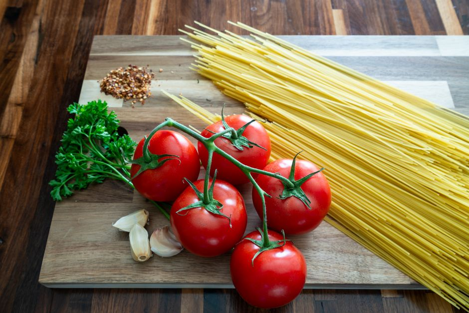

Essential Ingredients for Economical and Nutritious Meals
Feeding yourself well doesn't have to break the bank. By focusing on a few key, economical ingredients, you can prepare delicious, nutritious meals that won't strain your budget. Here are five essential ingredients to consider, each with a concrete example to illustrate their use.

Photo: Frank Schrader / Pexels
1. Whole Grains
Whole grains like brown rice, quinoa, and oats are not only budget-friendly but also highly nutritious. They provide essential nutrients and fiber, keeping you full and satisfied. For example, you can cook 1 cup of quinoa using 2 cups of water, which serves about 4 people. This versatile grain can be used in a variety of dishes, from a simple breakfast bowl to a hearty salad.
2. Legumes
Legumes, such as lentils, chickpeas, and black beans, are another cost-effective way to boost your meals. They are rich in protein, fiber, and various vitamins and minerals. A 150g can of chickpeas can serve 3 to 4 people in a meal, making them a great addition to salads, soups, or stews. For instance, a simple chickpea salad can be made by draining and rinsing 2 cans of chickpeas, chopping them and mixing with diced cucumber, cherry tomatoes, and a light dressing of olive oil and lemon juice.
3. Frozen Vegetables
Frozen vegetables are often cheaper than fresh and can be just as nutritious. They retain their vitamins and minerals and are convenient to use. For example, 1 pound (about 16 oz) of frozen broccoli can serve 4 people and can be quickly cooked in a pot with some garlic and olive oil. This vegetable is perfect for a quick stir-fry or added to soups.
4. Eggs
Eggs are a powerhouse of nutrition, providing protein, vitamins, and minerals. They are incredibly versatile and can be used in many different dishes. For instance, 12 large eggs can serve 4 people and can be used to make a batch of homemade mayonnaise. A simple recipe involves whisking 6 eggs, 1/4 cup of lemon juice, 1/4 cup of mustard, 1/2 cup of oil, and a pinch of salt and pepper.
5. Canned Tomatoes
Canned tomatoes are a staple in many kitchens, offering a rich source of lycopene and other antioxidants. They are often cheaper than fresh and can be used in a variety of recipes. For example, 4 cans of crushed tomatoes can serve 8 people and can be used to make a flavorful tomato sauce for pasta or pizza. A simple recipe involves simmering the crushed tomatoes with garlic, onions, and a bay leaf for about 20 minutes.
By incorporating these five ingredients into your meals, you can create a variety of economical and nutritious dishes. Whether you're cooking for yourself or feeding a family, these ingredients will help you stay on track with your budget while ensuring your meals are packed with nutrients.
Recommended products
As an Amazon Associate, I earn from qualifying purchases.